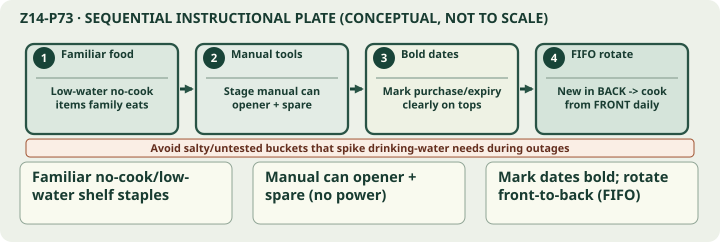

Z14-P73 · Food production and preservation · New manuscript
Build a rotated household emergency food pantry using FIFO inventory
Maintain familiar, low-water, no-cook emergency meals that your family actually eats and rotates continuously without waste.
When it applies · Every household building a 3-day, 14-day, or 30-day emergency food inventory.
Equipment · Shelf-stable familiar foods, manual hand-crank can opener (plus spare), permanent marker, and simple pantry shelf rotation routine.

Actions
- Stock familiar, everyday shelf-stable foods that require NO refrigeration and MINIMAL water or cooking: canned meats, fish, beans, soups, vegetables, and fruits, peanut/nut butters, crackers, oats, dry pasta/rice (when fuel/water exist), shelf-stable UHT milk, and comfort snacks—paired with a sturdy manual can opener.[P15]
- Avoid salty/spicy foods that spike drinking-water demand sharply during water outages, and skip buying exotic "emergency buckets" nobody in the household has ever tasted or verified against food allergies.[P15]
- Practice FIFO (First-In, First-Out) rotation seamlessly as part of normal grocery shopping: mark purchase/expiration dates boldly on can tops, place newly bought items at the BACK of the shelf, and cook from the FRONT so reserves stay fresh continuously with zero expired waste.[P15, P18]
Failure recognition · Buying three cases of unfamiliar emergency ration bars ten years ago and forgetting a manual can opener when a blackout shuts off the electric opener.[P15]
Verify · Confirm manual can opener staged with pantry, low-salt familiar no-cook meals included, dates marked boldly, and FIFO rotation active.[P15]
Stop or change course · Do not rely on single-ingredient dry staples (like raw dry beans alone) without matching water, soaking time, and safe outdoor cooking fuel.[P15, W14]
Evidence and editorial notes
- P15 · FEMA / Ready.gov · Emergency Food Supply (current web edition)
- Section: Emergency Food Inventory > Non-Perishable Rotation, Dietary Needs, and Tools · Conditions: Household multi-day to 30-day emergency pantry planning
Support: Build a rotated pantry of familiar shelf-stable foods requiring minimal water and no refrigeration (canned proteins/vegetables, dry grains/legumes, nut butters, infant/medical/pet diets), keep a manual can opener, and mark purchase/rotation dates clearly (FIFO).
Limitations: Do not invent unverified multi-decade shelf lives; commercial "Best By" dates reflect quality while damaged, rusted, or dented-seam cans pose safety hazards. · Conflicting evidence: None; aligns with FSG-4 and NCHFP storage hygiene.
Editorial note: Grounds household food inventory, FIFO rotation, and can-integrity screening. · Specialist reviewer: Household preparedness and food safety
Primary source · checked 2026-11-24 - P18 · University of Minnesota Extension · Harvesting and Storing Home Garden Vegetables (current web edition)
- Section: Dry Grain, Legume, and Pantry Pest/Moisture Protection · Conditions: Cool dry household pantries storing dry beans, grains, flour, and dehydrated produce
Support: Store dry staples and dehydrated foods in cool (ideally 50–70°F), dark, dry locations inside airtight food-grade containers to prevent moisture absorption, rancidity, rodents, and pantry insects; inspect periodically for clumping, webbing, or off-odors.
Limitations: Heat, humidity, and light degrade nutrients and accelerate fat rancidity in whole grains and nuts far faster than refined staples. · Conflicting evidence: None; avoids fabricated 25-year shelf-life promises.
Editorial note: Grounds dry-goods storage, pest exclusion, and spoilage inspection. · Specialist reviewer: Food storage and Extension specialist
Primary source · checked 2026-11-24 - W14 · CDC · How to Create an Emergency Water Supply (current web edition)
- Section: How Much Water to Store; Rotation · Conditions: Household emergency water reserve planning
Support: Plan at least 1 gallon per person per day for at least 3 days (more for heat, illness, pregnancy, or pets); rotate self-filled water every 6 months.
Limitations: Backcountry active travel demands vary sharply by exertion, temperature, and humidity. · Conflicting evidence: None; household baseline is cited only as a planning floor, not a physiological maximum.
Editorial note: Distinguishes household storage floors from active field hydration demands. · Specialist reviewer: Household preparedness and drinking-water safety
Primary source · checked 2026-11-24
Source lineage · FEMA Ready.gov Food; new manuscript · Classification · New manuscript.